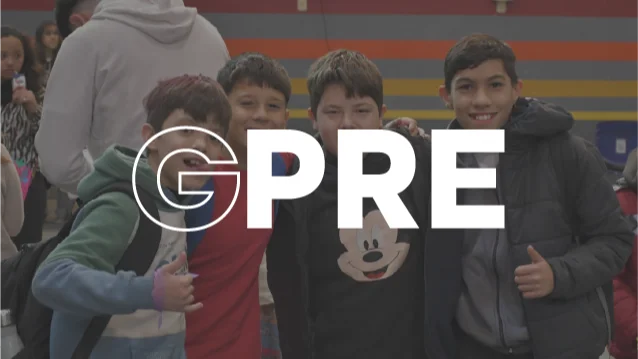
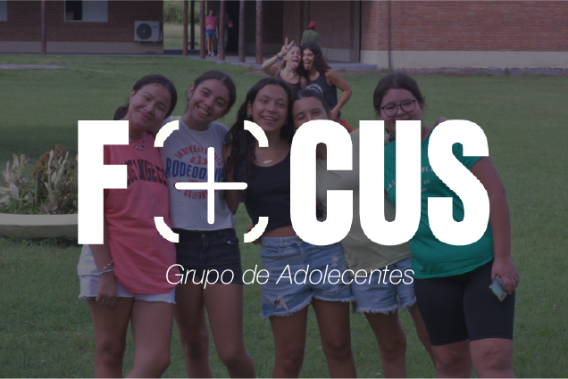
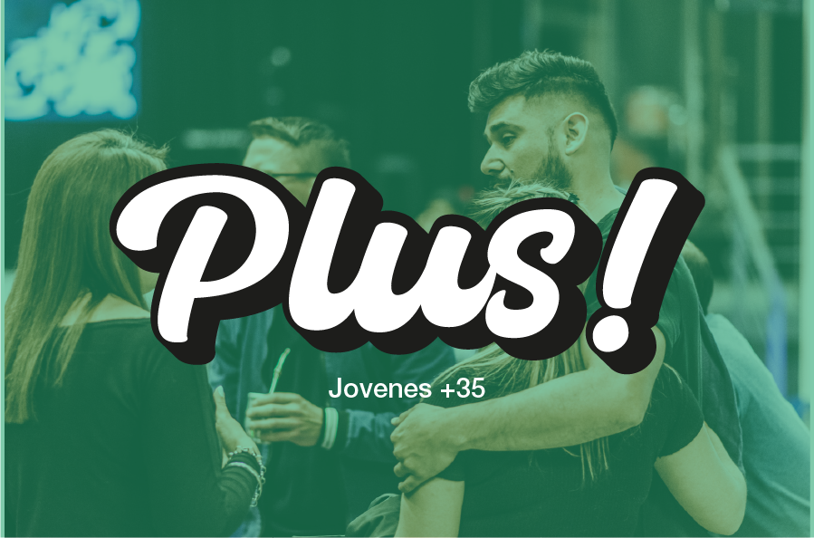

Niños (3 a 5 años)
Un espacio divertido y seguro para que los más pequeños aprendan de Jesús a través de juegos, música y enseñanzas creativas.





Adultos mayores (+65 años)
Comunidad para adultos que desean impactar su entorno con madurez y el amor de Jesús.